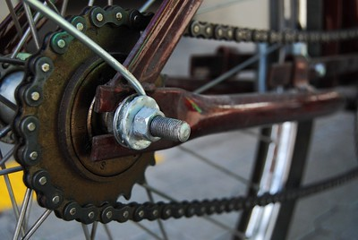

Mecanismos de transmisión de giro
Los sistemas de transmisión de giro ponen en contacto dos elementos que giran.
Estos mecanismos tienen dos finalidades:
- llevar el giro a un punto distante del lugar en que se produce la fuerza motriz y
- cambiar la velocidad final de giro del sistema.
Para lograr esto último, ambos elementos deben tener distinto tamaño.
Estas funciones pueden llevarse a cabo con distintos elementos:
- ruedas de fricción, engranajes, poleas con correa, piñones y cadenas, etc.
Son los mecanismos utilizados en impresoras, bicicletas, dinamos, prensas de papel etc.

Para saber más continúa en el siguiente apartado.....